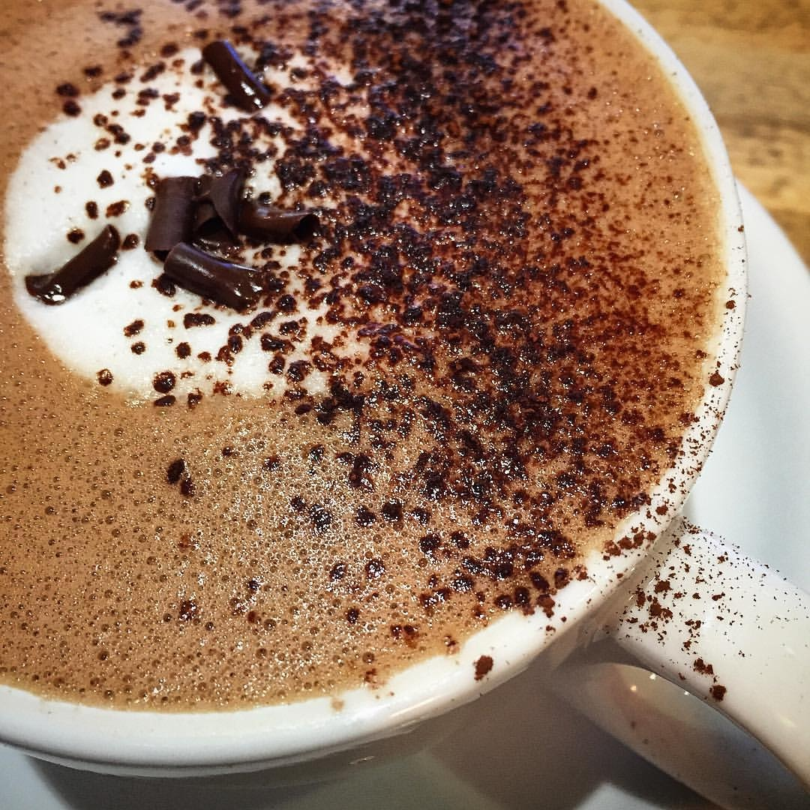
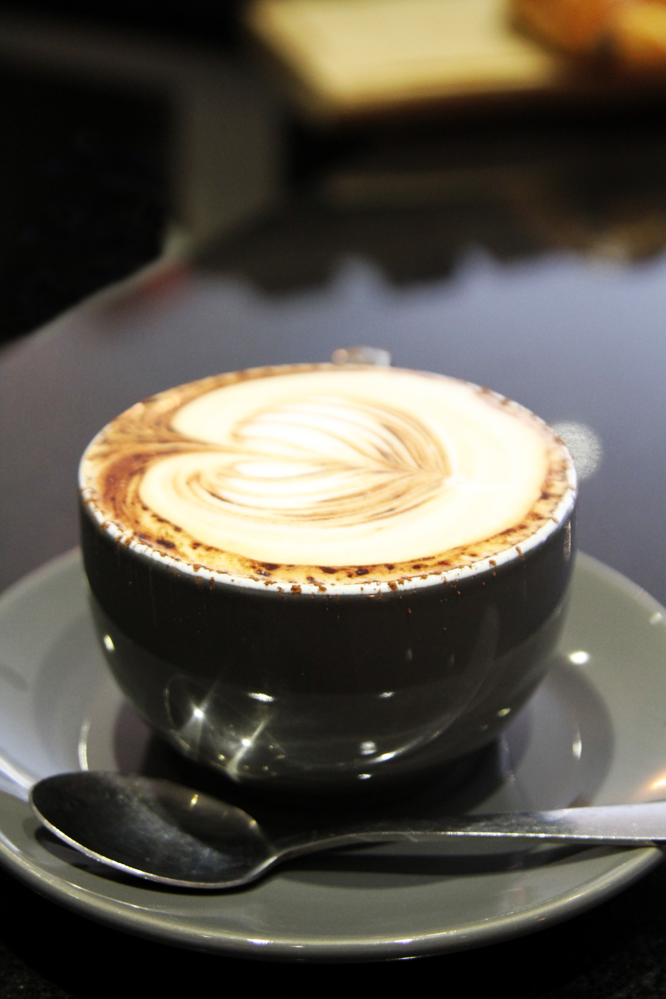
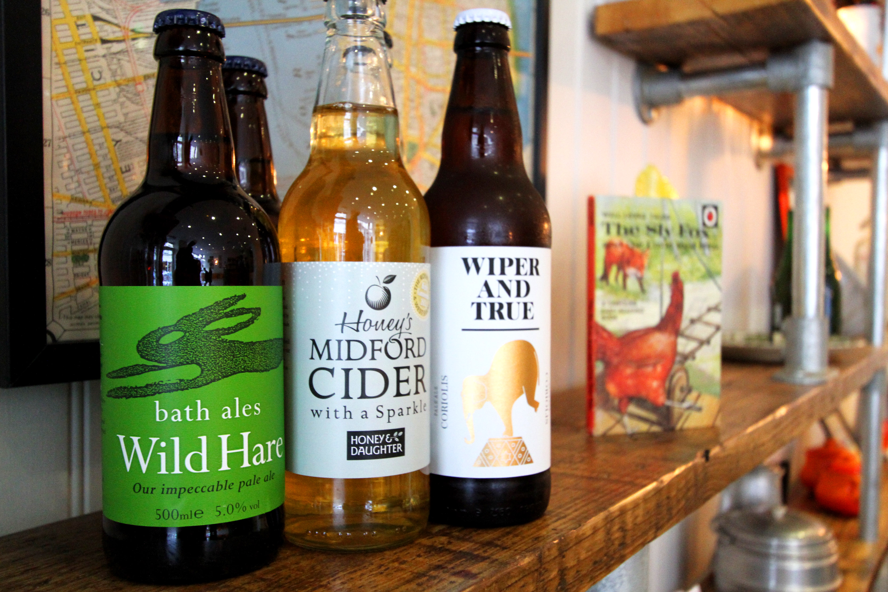

Our coffee comes from Brian Wogan, a long-running family business based in Bristol. We have
carefully selected a single-estate Nicaraguan bean which forms the foundation of all our delicious coffees. Not only are the beans directly traded, which means more money for the growers, Brian
Wogan also sponsors students on the Teach a Man To Fish education charity.
teachamantofish.org.uk

Henny & Joe’s Chai has become a firm favourite on the hot drinks menu & we are lucky to have
known its creators for many years. This too, is made in Bath.
On the chilled drinks front, we freshly squeeze our orange juice & make our own zingy lemonade
to order.
We source the remainder of our soft drinks directly from Ashridge drinks company, wholly
Organic & based in Devon.

We are fully licensed which has allowed us to hand pick a fantastic selection of alcoholic drinks.
Our wine list is small but carefully chosen to offer exceptional quality at an affordable price.
Whites, Reds, Rose & Sparkling are all available by the glass or bottle.
We also stock bottled ales from both Bath Ales & Wiper & True in Bristol. The cider we have
selected to sell is Honey’s Midford Cider which is made just twelve miles out of Bath.